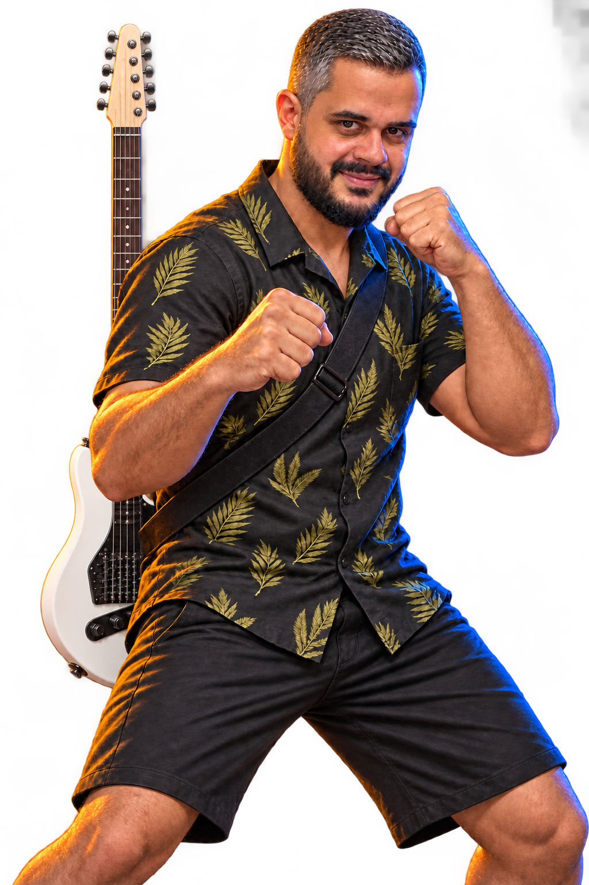
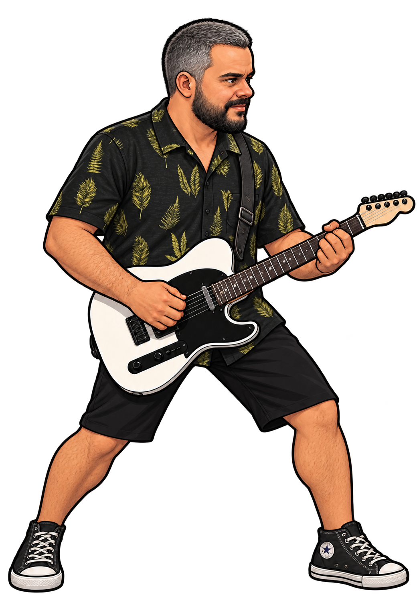
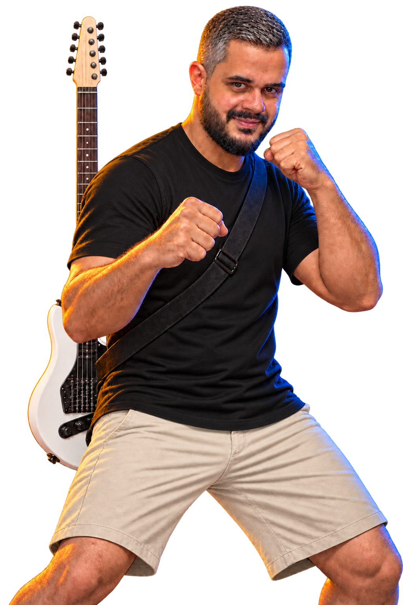
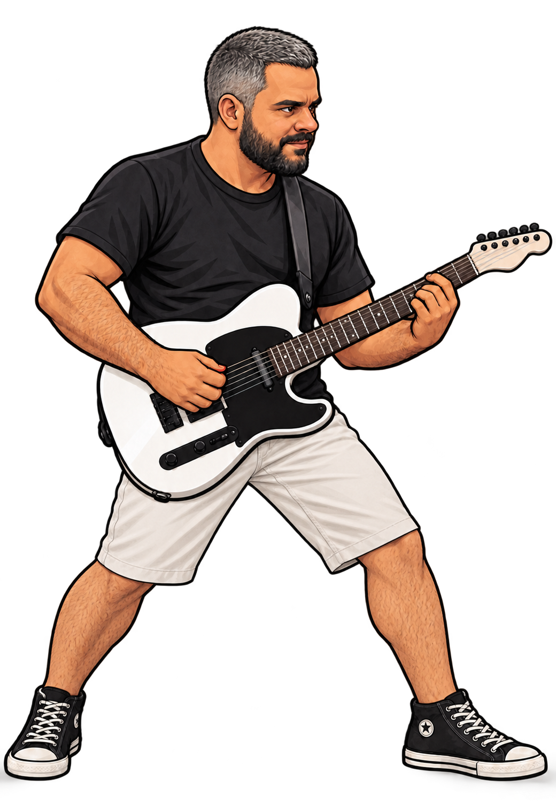

01 / LEAF-PRINT SHIRTDark leaf-print shirt, black shorts and All Star sneakers.MENU PORTRAITFIGHTER MODEL
02 / BLACK T-SHIRTBlack T-shirt, light beige shorts and All Star sneakers.MENU PORTRAITFIGHTER MODEL